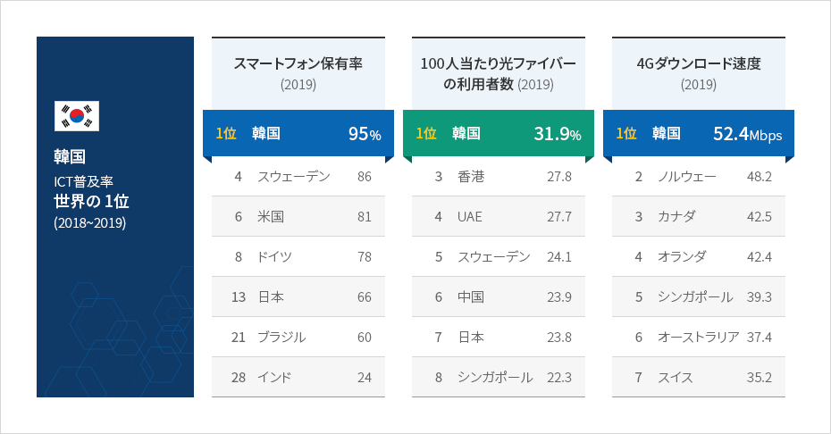
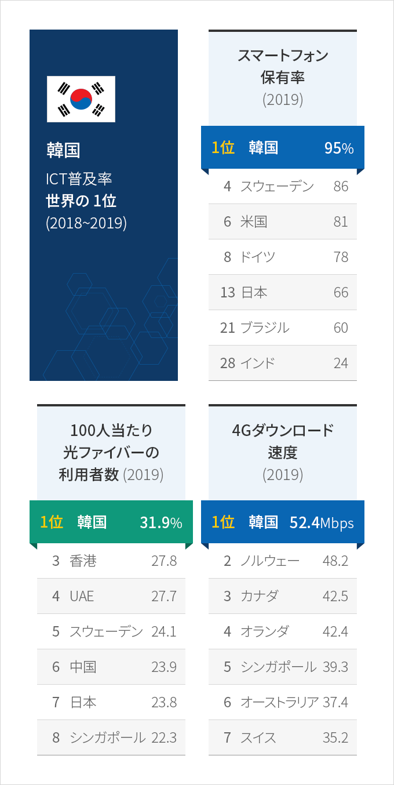
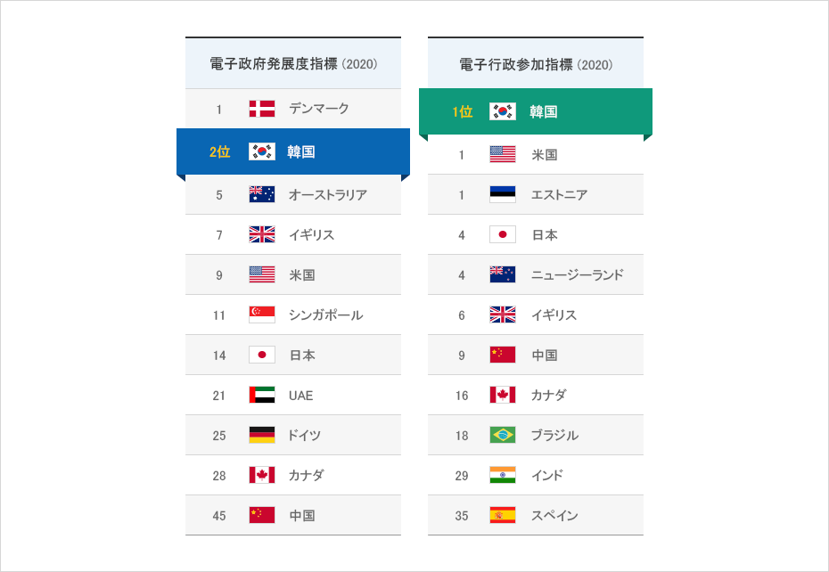
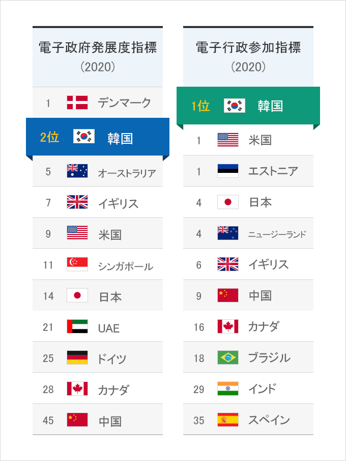

デジタル
- Home
- Why KOREA
- インフラ
- デジタル
世界最高のデジタルインフラ
世界経済フォーラム(WEF)によれば、韓国の情報通信技術（ICT）の普及率は2年連続で世界1位を達成した。
韓国のデジタルインフラは世界最高の水準で、世界初の5G商用化(2019年4月)もやはり韓国がグローバルICTリーダーであることを裏付けている。
韓国政府は「デジタルニューディール」政策を通じて投資を大幅に拡大し、デジタルインフラを確立する計画である。
韓国のデジタルインフラは世界最高の水準で、世界初の5G商用化(2019年4月)もやはり韓国がグローバルICTリーダーであることを裏付けている。
韓国政府は「デジタルニューディール」政策を通じて投資を大幅に拡大し、デジタルインフラを確立する計画である。



韓国 ICT普及率 1位 (2018~2019)
-
スマートフォン保有率 (2019)
- 1位 韓国 95%
- 4位 スウェーデン 86%
- 6位 米国 81%
- 8位 ドイツ 78%
- 13位 日本 66%
- 21位 ブラジル 60%
- 28位 インド 24%
-
100人当たり光ファイバーの利用者数（2019）
- 1위 韓国 31.9%
- 2位 シンガポール 22.3%
- 3位 香港 27.8%
- 4位 UAE 27.7%
- 5位 スウェーデン 24.1%
- 6位 中国 23.9%
- 7位 日本 23.8%
-
4Gダウンロード速度（2019）
- 1位 韓国 52.4Mbps
- 2位 ノルウェー 48.2Mbps
- 3位 カナダ 42.5Mbps
- 4位 オランダ 42.4Mbps
- 5位 シンガポール 39.3Mbps
- 6位 オーストラリア 37.4Mbps
- 7位 スイス 35.2Mbps

※ 出所 : 世界経済フォーラム（WEF）2019、Pew Research（2019）、Open Signal（2019）
海外へ輸出される韓国の電子政府
韓国は国連の電子政府ランキング評価のオンライン参加部門で2回連続1位となっており、電子政府の発展指数においても2位を占めている。
なお、世界の多くの国々からその優秀性が高く評価され、韓国の電子政府システムを輸出している。
韓国の電子政府の優秀性は韓国政府のデジタル化(Digitalization)への意思を示すと同時に韓国のデジタルインフラの強みを示すものだ。
なお、世界の多くの国々からその優秀性が高く評価され、韓国の電子政府システムを輸出している。
韓国の電子政府の優秀性は韓国政府のデジタル化(Digitalization)への意思を示すと同時に韓国のデジタルインフラの強みを示すものだ。


電子政府発展度指標 (2020)
- 1位 デンマーク
- 2位 韓国
- 5位 オーストラリア
- 7位 イギリス
- 9位 米国
- 11位 シンガポール
- 14位 日本
- 21位 UAE
- 25位 ドイツ
- 28位 カナダ
- 45位 中国
- 1位 韓国
- 1位 米国
- 1位 エストニア
- 4位 日本
- 4位 ニュージーランド
- 6位 イギリス
- 9位 中国
- 16位 カナダ
- 18位 ブラジル
- 29位 インド
- 35位 スペイン

※ 出所 : 2020 UN E-Government Survey（2020.7.10）